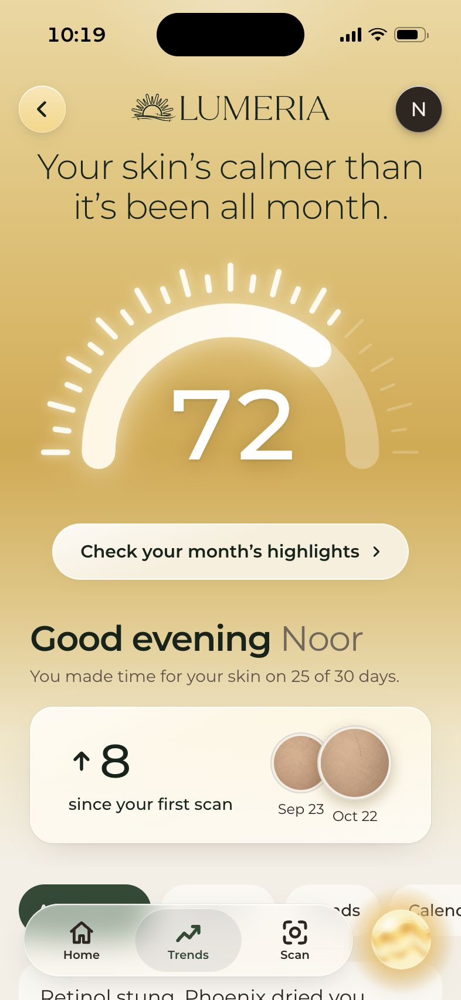

Make a month of scans useful.
The report answers three questions: how is my skin today, is it getting better, and what is behind the numbers?
From individual scans to a report you can return to.
The report answers three questions: how is my skin today, is it getting better, and what is behind the numbers?

Noor has a month of scans. Jordan has one. Sam has gaps and missing details.
The brief’s fictional profiles guided these scenarios.
See the score, change, and highlights from the latest scan.
Compare scan dates with your routine and events.
Revisit the scans, scores, and notes from the month.
Your latest score, change, and scan are together on the overview.
Open the report ↗